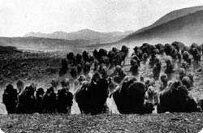

|

|
|
We did not think of the great open plains, the beautiful rolling hills,
and the winding streams with tangled growth, as "wild." Only
to the white man was nature a "wilderness" and only to him was
the land "infested" with "wild" animals and "savage"
people. To us it was tame. Earth was bountiful and we were surrounded
with the blessings of the Great Mystery. Not until the hairy man from
the east came and heaped injustices upon us and the families we loved
was it "wild" for us. When the very animals of the forest began
fleeing from his approach, then it was that for us the "Wild West"
began.
- Chief Luther Standing Bear, Oglala Sioux
Seth Eastman, Dacotah Encampment, n.d., watercolor. Courtesy W. Duncan and Nivin MacMillan and the Afton Historical Society Press.
Enlarge
|
Transformation of the Plains Peoples
The image of the mounted Plains warrior wearing a feather headdress has
become for many people a portrait of all American Indians. Movies and
television have played their role in perpetuating this
stereotype
well into our time. That image is not even an accurate one of the Plains people,
much less of all Indians. For over 2000 years, before the arrival of the Europeans,
many Plains people lived as hunters and farmers on the margins of the Great
Plains in permanent villages of earth-covered lodges. They raised corn, squash,
beans, and sunflowers, and hunted game.
In the 17th century, the Plains Indians acquired some of the horses
that had been brought to North America by the Spanish. By the 18th century, most of
the Plains farmers had been transformed into
nomadic
buffalo hunters. The nomadic period,
which extended only from about 1750 to 1880, is a relatively short one in the long history
of the Plains people.

Herd of grazing bison on the vast plains
Enlarge |
The Great Plains
The vast Great Plains region consists of over a million square miles between the
Mississippi River and the Rocky Mountains, running north to the prairie provinces of
Canada and south to Texas. The terrain includes bluffs, mesas, wooded valleys, and
rugged wasteland, but mostly it is grassland. In the 18th century, this grazing land
supported the abundant buffalo herds that furnished the Plains people with everything
they needed for survival. Before acquiring the horse, Plains people hunted buffalo
on foot, carrying their few possessions on travois, pole sleds pulled by dogs. Horses
permitted greater efficiency in hunting and much greater mobility. Even tipis grew
larger once horses were available to transport the longer poles required.
More about the Plains Indians.
|